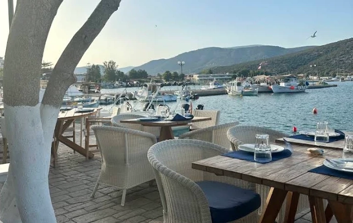
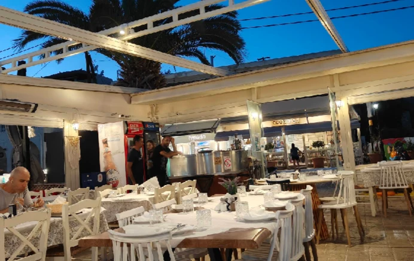
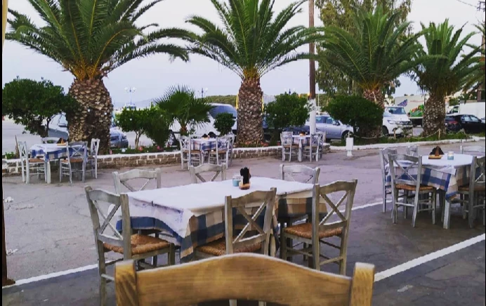
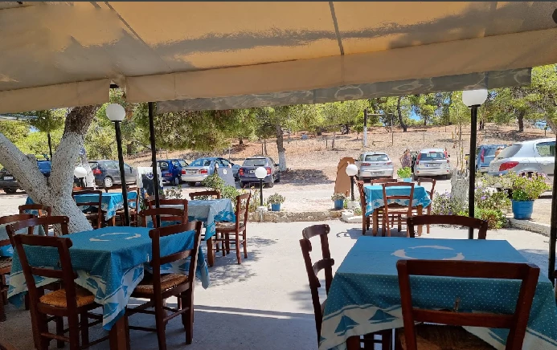
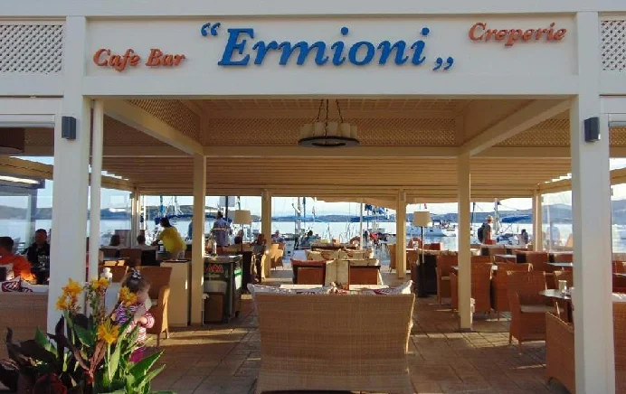

Nearby Business
Where we send our guests
Addresses we love ourselves, all within a short drive of the house, in and around Ermioni.
Our recommendations
Tavernas, terraces and one good café

Restaurant Ermioni Harbour
Maria's All-Day Restaurant
Exceptional! Situated in the heart of the harbour with views over Ermioni Bay, you'll be welcomed with a smile by Maria herself. All the dishes are excellent, always fresh and homemade, and the portions are generous. The atmosphere is relaxed and peaceful. Let Maria guide you; she'll be happy to recommend dishes from the menu. This restaurant is also superb in the evening, lit by candlelight.

Pizzeria Seafront Terrace
Cookoida
Excellent pizza. Extremely attentive and friendly service… In short… Don't hesitate to enjoy a lovely meal on the terrace – whether covered or open-air – overlooking the sea.

Taverna - near the Market Square
Karavaki Taverna
For connoisseurs, it's just the sort of tavern we love. A bit tucked away near the market square. No sea view, no fuss or frills, but some lovely mezze. You dine amongst the locals with few tourists, and it's a real treat. A very warm welcome with a smile. The red mullet (barbounia) are incredibly fresh. Excellent fava, kolokithokeftedes and taramosalata.

Traditional Tavern
Taverna "Le Bisti"
A traditional Greek taverna. The décor certainly isn't on a par with the tavernas in the harbour, but the food is very good. Sometimes what's on your plate matters more than sophisticated décor and mediocre food. The place is very quiet and there's a very large car park opposite. The service is very friendly and cheerful, the prices extremely reasonable. Few tourists and plenty of locals.

Cafe and Cocktails - seaside
Café Bar Ermioni
It's a real pleasure to relax on the sofas overlooking the sea. Here you can enjoy some delicious ice creams or sorbets. It's the perfect spot for a cocktail or a drink... very warm welcome with a smile. They take the time to have a little chat with you.